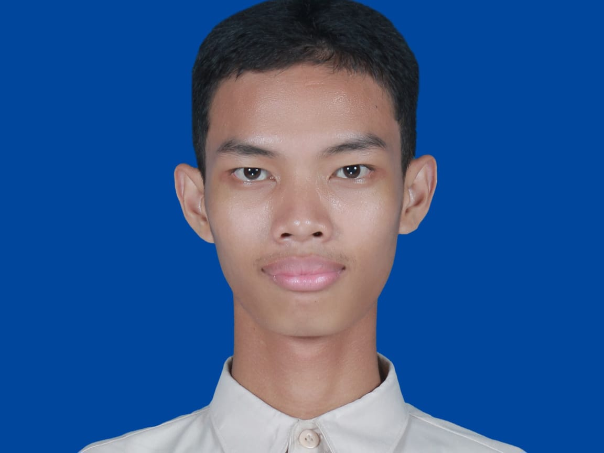
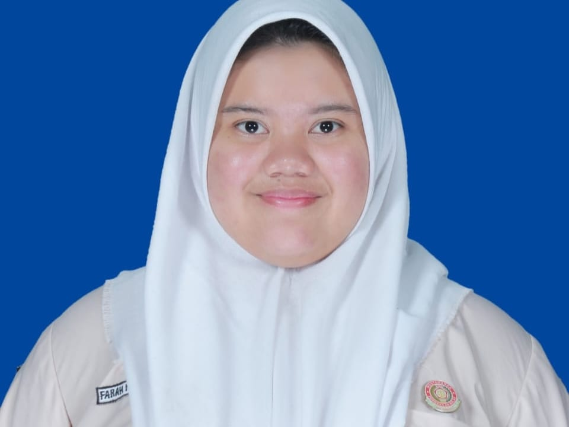

VISI:
Menjadikan MPK sebagai wadah yang peduli, bijak, dan bermanfaat bagi seluruh warga
sekolah dengan mengedepankan "PUNAKAWAN"
1. PU – Peduli Aspirasi
2. NA – Nalar Aspiratif
3. KA – Kolaborasi
4. WA – Wadah Kreativitas
5. N – Nilai Integritas
MISI:
1. Menyediakan wadah penyampaian aspirasi siswa yang terbuka dan aman.
2. Mengolah aspirasi dengan nalar kritis agar menghasilkan solusi yang bermanfaat.
3. Membangun kerja sama aktif dengan organisasi, ekstrakurikuler, dan pihak sekolah
4. Mendorong kreativitas siswa dengan memberikan evaluasi yang membangun.
5. Mengembangkan kualitas anggota MPK dengan menanamkan nilai integritas dan tanggung jawab.
PROGRAM KERJA:
• KOLASE (Kolaborasi Aspirasi dan Evaluasi)
Yaitu sebuah forum yang bertujuan untuk menjadi wadah evaluasi terbuka dan solutif antara MPK, organisasi, ekstrakurikuler, serta perwakilan kelas di SMA Negeri 2 Purwokerto. Melalui KOLASE, setiap pihak diberi ruang untuk menyampaikan evaluasi, kritik, maupun apresiasi terhadap kinerja MPK secara langsung dan sehat. Forum ini tidak hanya berfungsi sebagai sarana penyampaian masukan, tetapi juga sebagai momentum refleksi di pertengahan masa jabatan, sehingga MPK dapat meninjau kembali program kerja yang telah dijalankan, memperbaiki kekurangan, dan memperkuat hubungan kolaboratif dengan seluruh elemen sekolah.

2
Fadhil Ardiansyah
VISI:
Menjadikan MPK sebagai organisasi pengawas yang kritis, aspiratif, dan solutif yang mampu menjadi teladan dalam membangun budaya demokratis di lingkungan sekolah.
MISI:
1. Mengoptimalkan fungsi evaluasi dan pengawasan melalui sistem yang objektif dan transaran.
2. Meningkatkan kualitas anggota MPK
3. Menyempurnakan progrram kerja MPK yang sudah ada
4. Menghadirkan komunikasi yang terbuka
PROGRAM KERJA:
• MPK Award
MPK Award adalah program kerja MPK berupa ajang penghargaan bagi organisasi dan ekstrakurikuler yang ada di sekolah. Program ini dibuat untuk memberikan apresiasi atas kinerja mereka, memotivasi agar terus berprestasi, serta menumbuhkan budaya evaluasi yang sehat, transparan, dan inspiratif.

3
Farah Nabila Balqis
VISI:
Menjadikan MPK sebagai lembaga legislatif siswa yang modern, transparan, dan akuntabel, serta menjadi jembatan aspirasi yang responsif demi terwujudnya sinergi organisasi dan ekstrakurikuler bagi kemajuan seluruh siswa di sekolah.
MISI:
1. Membangun kanal aspirasi digital yang inklusif dan mudah diakses untuk menampung seluruh suara, ide, dan keluhan warga sekolah secara proaktif kepada organisasi dan ekstrakurikuler. (Aspirasi)
2. Mengawal dan mengawasi perencanaan serta realisasi anggaran dan program kerja organisasi dan ekstrakurikuler secara objektif dan transparan untuk memastikan setiap kegiatan memberikan manfaat maksimal bagi siswa. (Anggaran & Pengawasan)
3. Menyelenggarakan evaluasi kinerja organisasi dan ekstrakurikuler yang konstruktif, berbasis data, dan melibatkan partisipasi siswa secara luas sebagai bahan perbaikan berkelanjutan. (Evaluasi)
PROGRAM KERJA:
• MILKITA (Mozaik Kinerja Tahunan)
MILKITA merupakan sebuah program kerja evaluasi dan inovasi bagi seluruh organisasi dan ekstrakulikuler yang dimana bertujuan untuk mengenalkan setiap kegiatan-kegiatan dari masing-masing organisasi dan ekstrakulikuler melalui infografis menarik yang nantinya akan dipamerkan di program kerja MILKITA 1 dengan tema Gallery Walk of MPK pada saat SMADA Expo. Selain itu, MILKITA 2 akan hadir di akhir kepengurusan sebagai bentuk tanggung-jawab serta melakukan evaluasi kinerja dari masing-masing organisasi dan ekstrakulikuler. Tujuan dari evaluasi ini adalah untuk perbaikan dan peningkatan kualitas dari masing-masing organisasi dan ekstrakulikuler. Dengan harapan, hasil dari MILKITA 2 akan menjadi sebuah solusi yang ditemukan secara bersama-sama, meningkatkan rasa solidaritas organisasi dan ekstrakulikuler, dan terciptanya kepengurusan di periode selanjutnya yang dapat memberikan hasil lebih maksimal.
4
Sultan Rafi Muzaki
VISI:
Mewujudkan MPK yang aspiratif, transparan, dan sebagai wadah perjuangan suara siswa demi terciptanya organisasi yang progresif, demokratis, dan berintegritas
MISI:
1. Menjadi jembatan komunikasi yang aktif, responsif, dan terbuka terhadap aspirasi seluruh siswa.
2. Menjalankan fungsi pengawasan terhadap program kerja dari organisasi dan ekstrakurikuler di SMA Negeri 2 Purwokerto dengan prinsip transparansi dan akuntabilitas.
3. Melakukan evaluasi rutin dan menyeluruh terhadap kegiatan sekolah serta memberikan rekomendasi solutif yang membangun.
4. Mengawasi alokasi dan penggunaan dana kegiatan agar tepat sasaran, adil, serta bermanfaat bagi seluruh siswa.
5. Meningkatkan kualitas anggota MPK dengan pelatihan kepemimpinan, manajemen organisasi, dan komunikasi publik
PROGRAM KERJA:
• MPK Menyapa
Program tersebut berisikan kegiatan tur kelas MPK untuk menyapa siswa dan mendengar aspirasi langsung. MPK mengunjungi setiap kelas secara bergiliran sesuai jadwal. MPK membuka forum diskusi ringan dengan siswa di kelas untuk mendengarkan suara mereka (aspirasi yang disampaikan akan dipilih dan dipilah untuk nantinya disampaikan pada pihak sekolah pada FORKSA berikutnya). Setiap kunjungan ke masing masing kelas, MPK membawa formulir (bisa fisik atau digital) untuk menampung masukan. Menyampaikan update program kerja MPK agar siswa lebih tahu dan bisa ikut berpartisipasi. Harapannya, program ini dapat meningkatkan keterlibatan siswa dalam demokrasi sekolah, mewujudkan sekolah yang responsif terhadap aspirasi siswa, dan menjadi landasan untuk perbaikan dan inovasi program sekolah.
Konfirmasi Pilihan
Pastikan pilihan Anda sudah tepat
Nama Kandidat
Visi Kandidat
⚠️ Data tidak dapat diubah setelah dikirim. Harap periksa kembali sebelum mengirim.